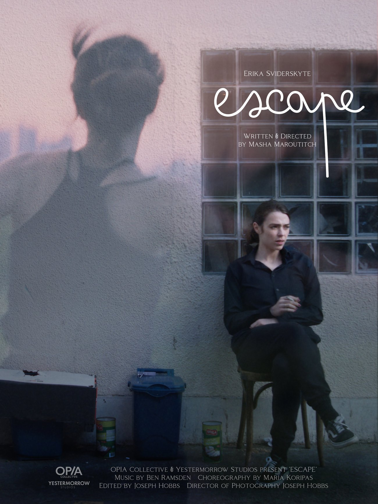

Quiet Worlds Collection · Experimental
Watch Film
Synopsis
A young woman finds a way out of her reality through dance.
Full synopsis to follow ahead of release.
Details
Director Interview
Director Masha Maroutitch on the making of Escape. Tap a question to read her answer.
Escape came from really wanting to practise filmmaking. I was aware that I'd never made a film before and I wanted to practise, so I started thinking about what idea I could do using the resources I had. That was Joe, the DP I was collaborating with, who had a camera, and an actress I knew who was a dancer. I was trying to work out what I could test out using what I'd got.
What I like to do in life is collect images that I see. There was one image, when I was in rehearsal and walked out on my tea break, of a girl in trackies smoking a cigarette and doing ballet, with the sun backlighting her, and I thought, I fucking love that. In my head I thought, that's going to be in a movie somewhere.
Then, when I was trying to think of a really simple story with no dialogue, I thought, someone using dance as an escape. That was the image, and I wanted to capture it. So I wrote a script that tried to capture the feeling of escaping, and that image I'd seen in real life. That was the inception, and I built everything else around what I had at hand: my resources, the park I knew that had a great view, things like that.
It's interesting that it can also be read as avoidance. I saw it as a way to escape reality, because sometimes life is really hard. When you tune in, when you listen to music or allow your body to move, you can reconnect back to yourself. So it was this relationship of a girl escaping her reality.
What was really interesting is what happens subconsciously. When you film something and then edit it, you start to see things you didn't plan. The final image of the film is her standing against Canary Wharf, with all these skyscrapers, and it's like, ah, she hasn't really escaped, because she's still faced with that commercial, capitalist thing, the cycle she's trapped in. You might film something and subconsciously something else comes out.
The intention was to find escape through dance, and we played with the camera movement too, to find freedom and flow, so it goes from static to flow. But it's interesting how we're still trapped. So it's fine that you call it avoidance.
A really big difference between theatre and film is that with film you have control of the image. I can choose exactly what I want in the frame, and exactly what I want the audience to look at, whether that's a hand gesture or a specific landscape. As the director and storyteller, I choose where the audience looks, and the rhythm of it.
In theatre you don't have control over where the audience looks. They might be looking at the actor fiddling with their top downstage, or their attention might be caught by a light up in the rig. The audience can look anywhere, and your job as a director is to focus the storytelling through tension and rhythm, but you don't have control of the frame. Being able to control that, and the rhythm, was something I found quite liberating in film.
The second difference is process. In theatre, if you're lucky, you have five to eight weeks to create a show. In film, your creative process actually happens before the shoot. When you're on set you have a bit of creativity, but mainly you've got to hit the beats and the shot list; it's a race against time. In theatre that period comes in tech, when you bring in the lights and the sound, right at the very end. So it was understanding that in film all the creative decisions happen beforehand, whilst in theatre you have the luxury of making them with the actors over four to eight weeks.
With visual art, I do a lot of painting. When I storyboard, I'll draw out each image, so I put that skill as a visual artist into my theatre and film work, being really specific about the frames, the colours, the visual language. For me, the most exciting thing is when you weave different art forms together. I've always loved it when stories are told using music, dance, all these different elements, because it can really help expand the story.
A big part of my work is dance. I trained as an ice dancer when I was very young, so when I'm using space I think about the relationship the camera has with the actor, how you choreograph that, and what the rhythm of it is. That's a skill that only comes into place if you have a background in movement, an understanding of how you sculpt space with people, the same as with blocking.
You also weave in your background as a writer. I write my own work, and that gives you a very specific training in story beats, language, dialogue and rhythm, and in how a strong draft translates visually. So it's weaving these elements together, and leaning on collaborators who have different skill sets from yours so you can keep weaving.
I really appreciate when stories are told using all of these: music, visual art, text. Putting them together often creates the most exciting piece of art. In Greece they talked about this; the highest form of art was when all three were merged together, and I think that's true. If you can communicate something using different art forms, you can touch different points with the audience. Someone might hear the score and be moved, someone might see the visual language, someone might hear the text. If you can tap into that, you can sculpt a story that's more three-dimensional.
What we've got next is Ubiquitous, which is currently doing its festival route, which has been really exciting; it's been lovely to build a community with other filmmakers. I also have a third short film in post-production, so right now we're finalising the score and the sound design, and hopefully it gets screened soon. I wanted to push into something more dialogue-heavy, so that one primarily explores dialogue and Gothic horror, which I think is going to be really fun, fun and camp.
I'm currently developing my feature script, spending a lot of time writing. This September I'll be making a music video for Aragore, who's a brilliant artist, with Gary Stu, an amazing cinematographer. Something I always like to do is one project a year, to film something, because it keeps the muscle growing.
I'm also building my production company, OPIA Collective. I want to find how I can, as a filmmaker and an artist, create resources and a platform for other people. Often you can wait around for someone to say yes, or to hand you funding, and if you do that, you'll be waiting for ages. So I want to build a platform that enables and validates people to think, fuck it, I can make something for £300, which Escape essentially was, made for £500 in total including post. Just to give those resources, and more transparency. So that's what's in the bag.
Director
Writer & Director
Masha Maroutitch is a multidisciplinary artist of Ukrainian, Russian and Jewish heritage, and Artistic Director of OPIA Collective, an associate company of the National Youth Theatre of Great Britain.
In 2023 her production of LALI by Shadi Hamta (VAULT Festival, Mercury Theatre) was nominated for the Origins Award for Outstanding Theatre. She was a JMK Finalist in 2022 for her production of Crave by Sarah Kane. In 2020 she was awarded the inaugural Bryan Forbes Bursary for the NYT REP Company, assisting Ed Stambollouian and Miranda Cromwell before writing and directing Ordinary Miracle, which premiered at the National Youth Theatre. Her debut play, The Girl With Glitter In Her Eye, premiered at the Bunker Theatre to strong critical reception. She is currently developing her third play, BABEL, with JFR Productions, shortlisted for the Jerwood Writers in Residence Award 2025.
Her debut short films Ubiquitous and Escape are currently on the festival circuit, selected for BIFA, BAFTA and Oscar-qualifying festivals. Ubiquitous premiered at BFI Flare earlier this year before winning Best LGBTQIA+ Film at the BIFA-qualifying Brighton Rocks International Film Festival.
As a writer and director, her work has been performed, commissioned and developed by the BFI, the Royal Albert Hall, the Bunker Theatre, Theatre Royal Stratford East, the National Youth Theatre, Battersea Arts Centre, nabokov, the Royal Shakespeare Company, Harts Theatre Company, the Lyric Hammersmith, the Royal Court and the Pleasance Theatre.

The One-Sheet
OPIA Collective & Yestermorrow Studios present Escape
Every film we take lands on our Letterboxd first. Follow along and you'll catch it the moment it's live.
Follow on Letterboxd →